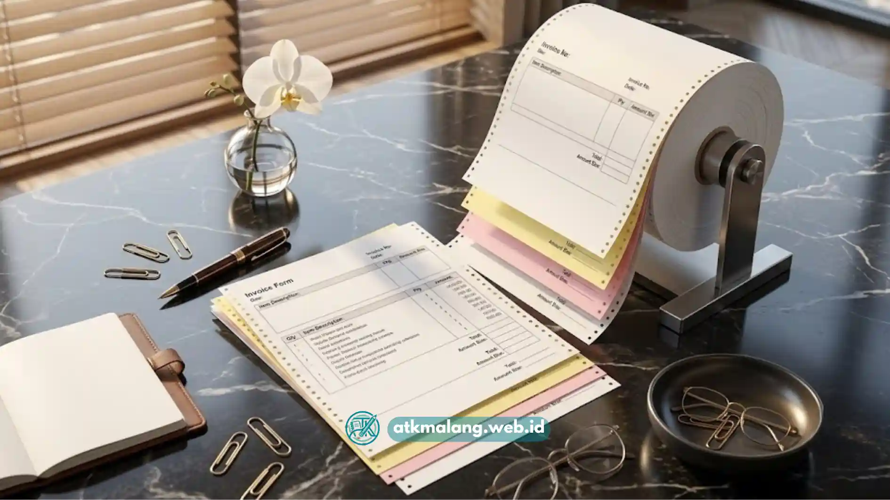

Kertas continuous form Malang rangkap 2 dan rangkap 3 adalah kertas berkelanjutan yang dirancang khusus untuk mencetak invoice, faktur, atau nota rangkap menggunakan printer dot matrix secara cepat dan efisien.
- Continuous form adalah kertas sambung yang dicetak menggunakan printer dot matrix.
- Rangkap 2 dan rangkap 3 memungkinkan pencetakan salinan dokumen sekaligus tanpa fotokopi.
- Kertas ini banyak digunakan untuk invoice, faktur, surat jalan, dan nota penjualan.
- Kualitas kertas karbon di setiap lapisan memengaruhi kejelasan hasil salinan.
- Memilih ukuran dan jumlah rangkap yang tepat membantu efisiensi proses administrasi bisnis.
Daftar Isi
Apa Itu Kertas Continuous Form dan untuk Apa Fungsinya?
Kertas continuous form adalah kertas cetak yang tersambung memanjang dengan lubang di sisi kiri dan kanan.
Kertas ini dirancang khusus untuk digunakan pada printer dot matrix guna mencetak dokumen berulang seperti invoice dan faktur yang menjadi bagian vital Alat Tulis Kantor.
Berbeda dengan kertas HVS lembaran biasa, continuous form dicetak secara berkelanjutan tanpa perlu mengganti kertas satu per satu.
Lubang-lubang di sisi kertas berfungsi untuk menarik kertas secara otomatis melalui mekanisme printer dot matrix, sehingga proses cetak dokumen dalam jumlah banyak menjadi lebih cepat dan efisien.
Fungsi utama continuous form di dunia usaha meliputi pencetakan invoice penjualan, faktur pajak, surat jalan pengiriman barang, nota pembelian, hingga laporan transaksi harian yang membutuhkan format baku dan berulang.
Apa Perbedaan Continuous Form Rangkap 2 dan Rangkap 3?
Continuous form rangkap 2 menghasilkan dua salinan dokumen sekaligus dalam satu kali cetak. Sementara rangkap 3 menghasilkan tiga salinan sekaligus, biasanya digunakan untuk kebutuhan dokumentasi yang melibatkan lebih dari dua pihak.
Perbedaan detail antara keduanya dalam penyediaan Alat Tulis Kantor dapat dijelaskan sebagai berikut:
- Rangkap 2 umumnya terdiri dari lembar putih (asli) dan satu lembar salinan berwarna. Cocok digunakan untuk transaksi yang hanya melibatkan dua pihak, misalnya penjual dan pembeli.
- Rangkap 3 terdiri dari tiga lembar dengan warna berbeda pada tiap lapisan, biasanya putih, merah, dan kuning. Cocok untuk transaksi yang melibatkan tiga pihak, misalnya untuk arsip perusahaan, bagian gudang, dan pelanggan.
- Mekanisme penyalinan pada kedua jenis ini umumnya menggunakan lapisan karbon (NCR atau carbonless) sehingga tulisan pada lembar pertama otomatis tersalin ke lembar berikutnya tanpa kertas karbon terpisah.
- Kebutuhan bisnis menjadi penentu utama pemilihan rangkap. Usaha kecil dengan alur transaksi sederhana umumnya cukup menggunakan rangkap 2, sedangkan usaha dengan alur dokumentasi lebih kompleks lebih cocok menggunakan rangkap 3.

Pastikan Anda memilih jumlah rangkap dan ukuran continuous form yang sesuai dengan printer perusahaan.Bagaimana Cara Memilih Continuous Form yang Tepat untuk Cetak Invoice?
Continuous form yang tepat untuk cetak invoice dipilih berdasarkan jumlah rangkap yang sesuai kebutuhan alur dokumentasi bisnis, ukuran kertas yang cocok dengan format invoice, serta kualitas lapisan karbon yang menghasilkan salinan jelas.
Beberapa hal yang perlu diperhatikan saat memilih persediaan Alat Tulis Kantor jenis ini:
- Sesuaikan jumlah rangkap dengan alur dokumen: Pastikan jumlah pihak yang membutuhkan salinan dokumen sesuai dengan jumlah rangkap yang dipilih.
- Perhatikan ukuran kertas: Ukuran continuous form yang umum digunakan biasanya disesuaikan dengan format invoice atau faktur yang sudah dirancang perusahaan.
- Cek kualitas hasil Salinan: Salinan pada lembar kedua dan ketiga sebaiknya tetap terbaca jelas, tidak pudar atau terlalu tipis.
- Pastikan kompatibel dengan printer dot matrix: Beberapa jenis printer memiliki batas ketebalan kertas yang dapat diproses dengan baik.
- Pertimbangkan kebutuhan bulanan: Usaha dengan transaksi tinggi sebaiknya membeli dalam jumlah lebih besar agar mendapatkan harga per set yang lebih ekonomis.
Apa Kesalahan Umum Saat Membeli Kertas Continuous Form?
Kesalahan umum saat membeli kertas continuous form adalah tidak memeriksa kejelasan hasil salinan pada lapisan terakhir dan tidak menyesuaikan ukuran kertas dengan format invoice yang sudah digunakan perusahaan.
Kesalahan lain yang sering terjadi ketika pengadaan belanja Alat Tulis Kantor di antaranya:
- Tidak mengecek sampel cetak sebelum membeli: Kualitas karbon yang buruk baru terlihat setelah kertas benar-benar dicetak di printer.
- Salah menghitung kebutuhan rangkap: Membeli rangkap 3 padahal kebutuhan bisnis hanya memerlukan dua salinan akan menambah biaya yang tidak perlu.
- Mengabaikan kompatibilitas dengan printer: Tidak semua printer dot matrix mendukung semua jenis ukuran continuous form karena lebar roller yang terbatas.
- Menyimpan kertas di tempat lembap: Kelembapan dapat memengaruhi kualitas lapisan karbon dan menyebabkan hasil salinan menjadi pudar atau kurang jelas.
Kertas continuous form rangkap 2 dan rangkap 3 di Malang menjadi solusi praktis bagi usaha yang membutuhkan pencetakan invoice atau faktur secara cepat dan berulang.